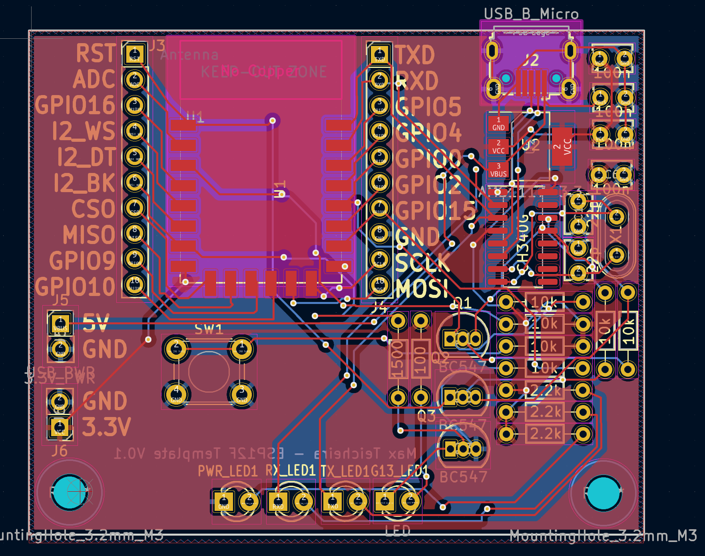

ESP8266-12F Breakout Board
Background
I plan to use the ESP8266 for multiple projects so this will be the information I’ve learned about a generic ESP8266-12F setup.
Technically I think this board would qualify as a development board, it is essentially what I am using it for. In addition to teach me how to design these kinds of boards.
Resources
Plan:
Use linear regulator(AMS1117-3-3v) to drop input voltage(5-12v). Use filter caps (10pF) on input and output ### Power Requirements: - 3.3v - <500mA ### Unknown/ToDo: Find amperage/power reqs
Programming/UART
The ESP8266 comes with a basic firmware that allows for a new firmware to be uploaded over UART. This allows for the USB to be able to upload firmware without a specific program upload option like JTAG.
Versions:
V0
Issues
- MicroUSB soldering issues
- The traces and pins hardly overlap making it very difficult to solder
- The solution is add more adjustment to the slots or make the traces extend further into the footprint
- Bad connection
- Might be weak with repeated use
- Might look for better USB option, USB-C?
- The traces and pins hardly overlap making it very difficult to solder
- The pinout of the ESP12-F completely wrong
- Several pins grounded that shouldn’t
- RX and TX in wrong place
- Need to reroute whole board
- Buttons and surrounding pins needed modification
- SW1 needed ground from SW2
- SW2 needed to cut connection from the resistor to ground
- So that when pressed it pulls to ground
- New ideas
- Add status LEDs
- TX,RX, Power, +customizable?
- Rearange the caps to properly reflect the schematic and move away from USB to protect
- Mounting holes or standoffs
- Add JTAG or programming pins
- JST connectors for pinouts?
- Also add auto programming and reset
- Also research other features
- Add status LEDs
V0.1
Works, was able to upload a blink program to the esp over USB. #### Problems - The button is not connected to anything - The leds are not bright, should increase current - Can hardly see LEDs flash on TX/RX - Needs more robust IO pins, maybe logic level converters? - Want SPI/I2C junction breakouts

Flashing firmware
Can be done in console using esptool.
pip install esptool
esptool.py --port /dev/ttyUSB0 --baud 115200 write_flash -fm dout 0x00000 <firmware.bin>Can also be done in the Arduino dev environment, which is also an easy way to compile the code to *.bin. Arduino also has a cli tool, arduino-cli that can invoke all the same tools as the GUI.